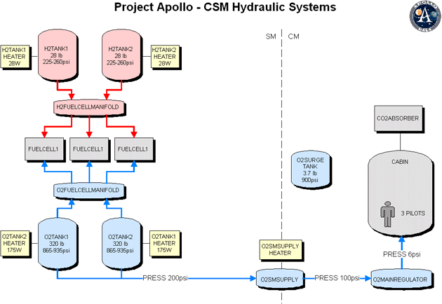

| |
The internal systems in Project Apollo are simulated with Radu Poenaru's System & Panel SDK, but only the "system" part is used, not the panel part. The panels are still managed by the Project Apollo spacecrafts themself together with the toggleswitch library (toggleswitch.cpp). Only a few hydraulical and electrical systems of the CSM EPS (Electrical Power System) and ECS (Environmental Control System) are integrated at the moment.
The following documentation describes the systems and components as they are modelled in Project Apollo with the PanelSDK. It's no documentation of the real Apollo systems. Of course both systems are similar and should behave identical as much as possible, but there are differences in internal details.
Most of the informations used for the internal systems came from the following references:
The following diagram shows the internal systems of the Command and Service Module (CSM) as modelled with the PanelSDK. These components are defined in the "saturncsmsystems.cfg" file in the config folder.

More detailled informations about that will follow soon....
 |
|